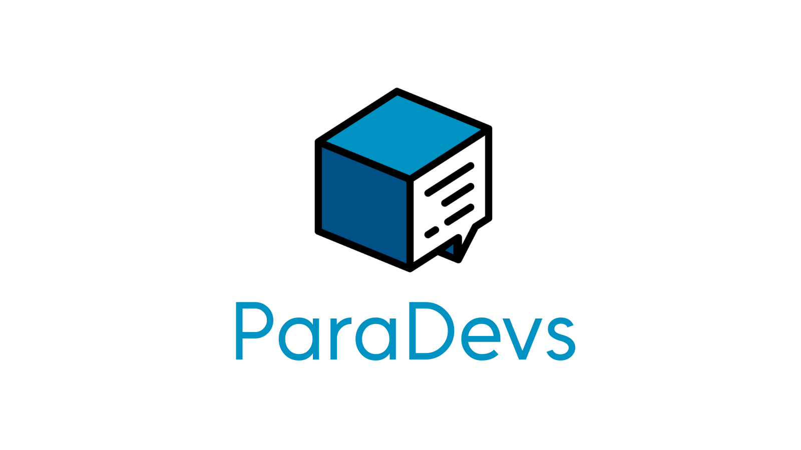

ECOP · 17 e 18 de Maio de 2026 · 16h–18h · Laboratório 2 - LTI
Para quem é esse material?
Essas notas acompanham os dois dias de oficina e servem como referência para consulta depois. Não precisa decorar nada — o objetivo é que você saia sabendo onde encontrar o que precisa e com prática suficiente pra não ter medo do terminal.
Ministrante: Gustavo Fontes
Horário: 16h00 – 18h00
Pré-requisito: ter participado do Dia 1 (ou saber navegar pelo terminal) e, de preferência, ter conta no GitHub.
Quem nunca fez isso?
projeto-final.zip
projeto-final-v2.zip
projeto-final-AGORA-VAI.zip
projeto-final-entrega.zip
projeto-final-entrega-REAL.zip
Isso é controle de versão manual — e não escala. Problemas:
| Problema | Solução com Git |
|---|---|
| "Estraguei tudo e não consigo voltar" | git revert para desfazer commits com segurança |
| "Não sei o que mudou desde ontem" | git diff e git log |
| "Não consigo trabalhar com mais pessoas" | Branches + merge + pull requests |
| "Onde está a versão que funcionava na demo?" | Tags e hash de commits |
| Git | GitHub |
|---|---|
| Ferramenta de controle de versão | Plataforma web para hospedar repositórios Git |
| Roda localmente no seu computador | Serviço na nuvem |
| Criado por Linus Torvalds (2005) | Fundado em 2008, comprado pela Microsoft em 2018 |
| Open source | Serviço proprietário (com plano gratuito generoso) |
Git é o motor. GitHub é uma das garagens onde você estaciona seu projeto. Existem alternativas: GitLab, Bitbucket, Codeberg.
Entender esse fluxo é a base de tudo:
┌─────────────────┐ git add ┌───────────┐ git commit ┌────────────────┐
│ Working Tree │ ──────────▶ │ Stage │ ─────────────▶ │ Repositório │
│ (seus arquivos)│ │ (index) │ │ local (.git) │
└─────────────────┘ └───────────┘ └────────────────┘
│
git push
│
▼
┌────────────────┐
│ GitHub │
│ (remoto) │
└────────────────┘
.gitgit config --global user.name "Seu Nome"
git config --global user.email "seu@email.com"
git config --global core.editor nano # editor padrão (opcional)
git config --list # confirma as configurações
cd meu-projeto # entrar na pasta do projeto do Dia 1
git init # inicializa o repositório Git
ls -la # agora existe uma pasta .git aqui
A pasta .git é onde o Git guarda todo o histórico. Nunca delete essa pasta.
git status
Saída típica:
On branch main
Untracked files:
(use "git add <file>..." to include in what will be committed)
README.md
src/
docs/
nothing added to commit but untracked files present
"Untracked" = Git sabe que o arquivo existe, mas não está rastreando ele ainda.
git add README.md # adiciona um arquivo específico
git add src/ # adiciona uma pasta inteira
git add . # adiciona tudo no diretório atual
Após o git add, o git status mostra:
Changes to be committed:
new file: README.md
new file: src/index.html
...
git commit -m "feat: estrutura inicial do projeto"
Boas mensagens de commit:
git commit -m "feat: adiciona página inicial" # nova funcionalidade
git commit -m "fix: corrige link quebrado no menu" # correção de bug
git commit -m "docs: atualiza README" # documentação
git commit -m "refactor: reorganiza pastas src" # refatoração
# Editar o README
echo "## Tecnologias" >> README.md
echo "- HTML" >> README.md
echo "- CSS" >> README.md
# Ver o que mudou
git status
git diff README.md # mostra as mudanças em detalhe
# Commitar
git add README.md
git commit -m "docs: adiciona seção de tecnologias ao README"
# Mais uma alteração
echo "<!-- Página inicial -->" > src/index.html
echo "<h1>Meu Projeto</h1>" >> src/index.html
git add src/index.html
git commit -m "feat: adiciona conteúdo básico ao index.html"
.gitignore Nem todo arquivo do projeto precisa ser versionado. Builds, dependências instaladas, arquivos com senhas — o Git deve ignorar esses.
O .gitignore é um arquivo de texto onde você lista padrões de arquivos que o Git deve ignorar completamente.
.gitignore touch .gitignore
nano .gitignore
# Dependências (Node.js)
node_modules/
# Builds
dist/
build/
*.min.js
# Variáveis de ambiente e senhas — NUNCA versione isso
.env
.env.local
*.key
# Arquivos do sistema operacional
.DS_Store
Thumbs.db
# Arquivos do editor
.vscode/
.idea/
*.swp
echo "minha-senha-secreta" > .env
git status # .env aparece como untracked
echo ".env" >> .gitignore
git status # .env sumiu da lista!
git add .gitignore
git commit -m "chore: adiciona .gitignore"
Regra de ouro: nunca commite arquivos
.envou com credenciais. Se já commitou acidentalmente, a senha deve ser considerada comprometida e trocada imediatamente.
Ao criar um repositório no GitHub, você pode escolher um template de .gitignore para sua linguagem — ele já vem configurado com os padrões mais comuns.
git log git log # histórico completo
git log --oneline # uma linha por commit (mais legível)
git log --oneline --graph # com representação visual de branches
git log -5 # apenas os 5 commits mais recentes
Exemplo de saída do git log --oneline:
a3f2c1d (HEAD -> main) feat: adiciona conteúdo básico ao index.html
9b1e4f0 docs: adiciona seção de tecnologias ao README
c7a8d3e feat: estrutura inicial do projeto
a3f2c1d) identifica o commit de forma únicaHEAD aponta para onde você está agoramain é o nome da branch atualgit diff git diff # mudanças não staged (working tree vs stage)
git diff --staged # mudanças staged (stage vs último commit)
git diff a3f2c1d 9b1e4f0 # diferença entre dois commits
git show git show # detalha o último commit
git show a3f2c1d # detalha um commit específico
Um dos maiores medos de iniciantes é "fazer algo errado e não conseguir voltar". Git foi feito exatamente para isso.
git restore — descarta mudanças não commitadas git restore arquivo.txt # descarta mudanças em um arquivo específico
git restore . # descarta mudanças em todos os arquivos
git restore --staged arquivo # tira um arquivo do stage (sem perder as mudanças)
git revert — desfaz um commit de forma segura git revert cria um novo commit que desfaz as mudanças de um commit anterior. O histórico fica preservado — ideal para projetos compartilhados.
git log --oneline
# a3f2c1d feat: adiciona seção de contato
# 9b1e4f0 docs: atualiza README
git revert a3f2c1d # abre o editor para confirmar a mensagem
git revert a3f2c1d --no-edit # aceita a mensagem padrão automaticamente
git reset — move o HEAD (use com cuidado) git reset é mais poderoso e desfaz o histórico. Deve ser usado apenas em commits locais que ainda não foram enviados ao GitHub.
git reset --soft HEAD~1 # desfaz o último commit, mantém arquivos no stage
git reset --mixed HEAD~1 # desfaz o último commit, tira do stage (padrão)
git reset --hard HEAD~1 # ⚠️ desfaz o commit E descarta todas as mudanças
| Opção | Commit desfeito | Stage | Arquivos |
|---|---|---|---|
--soft |
✓ | mantido | mantido |
--mixed |
✓ | limpo | mantido |
--hard |
✓ | limpo | descartado |
Regra prática:
git revertpara branches compartilhadas (o que foi ao GitHub).git resetapenas para commits locais que ainda não saíram da sua máquina.
Uma branch é uma linha paralela de desenvolvimento. Você pode trabalhar em uma nova funcionalidade sem afetar o código principal (main).
main: A ── B ── C ──────────── F (merge)
\ /
feature: D ── E ────
mainfeature a partir de Cmain (commit F)git branch # lista todas as branches
git branch nova-feature # cria uma nova branch
git switch nova-feature # muda para a branch (comando moderno)
git switch -c outra-feature # cria E já muda (comando moderno)
git branch -d nome # deleta a branch (após merge)
Nota:
git checkoutainda funciona para trocar de branch, mas desde o Git 2.23 (2019) ogit switché o comando preferido — ele é mais claro e faz só uma coisa.
# equivalentes antigos (ainda funcionam)
git checkout nova-feature # igual a git switch
git checkout -b outra-feature # igual a git switch -c
# Criar uma branch para desenvolver uma nova seção
git switch -c feature/contato
# Fazer alterações nessa branch
echo "<h2>Contato</h2>" >> src/index.html
echo "<p>email@exemplo.com</p>" >> src/index.html
# Commitar na branch
git add src/index.html
git commit -m "feat: adiciona seção de contato"
# Ver a diferença entre as branches
git log --oneline --graph --all
# Voltar para a main
git switch main
# Verificar: a alteração NÃO está na main ainda
cat src/index.html
# Fazer o merge
git merge feature/contato
# Agora está!
cat src/index.html
# Deletar a branch (já foi integrada)
git branch -d feature/contato
Um conflito acontece quando dois commits modificaram a mesma linha de formas diferentes. O Git marca o arquivo assim:
<<<<<<< HEAD
conteúdo da branch atual
=======
conteúdo da branch que está sendo mergeada
>>>>>>> feature/contato
Como resolver:
<<<<<<<, =======, >>>>>>>)git add e git commitNa maioria dos projetos pequenos, conflitos são raros. Quando acontecem, não entre em pânico — o Git está te dizendo exatamente onde o problema está.
+)meu-projeto)O GitHub vai mostrar os comandos. Siga a segunda opção ("push an existing repository"):
Desde agosto de 2021, o GitHub não aceita mais senha para operações via terminal. Há duas formas de autenticar:
repogit push origin main
# Username: seu-usuario-github
# Password: <cole o token aqui — NÃO sua senha normal>
Para não precisar digitar toda vez:
git config --global credential.helper store # salva em arquivo (persistente)
# ou
git config --global credential.helper cache # salva temporariamente (15 min)
# 1. Gerar o par de chaves
ssh-keygen -t ed25519 -C "seu@email.com"
# pressione Enter nas perguntas para aceitar os padrões
# 2. Copiar a chave pública
cat ~/.ssh/id_ed25519.pub
# Copie toda a saída
# 3. Adicionar no GitHub: Settings → SSH and GPG keys → New SSH key
# Cole o conteúdo copiado acima
Com SSH configurada, use a URL SSH ao adicionar o remote:
git remote add origin git@github.com:seu-usuario/meu-projeto.git
Para a oficina: use o Personal Access Token — é mais rápido de configurar agora. Para o dia a dia, vale configurar SSH uma vez e nunca mais precisar digitar credenciais.
# Adicionar o repositório remoto
git remote add origin https://github.com/seu-usuario/meu-projeto.git
# Verificar se foi configurado
git remote -v
# Enviar os commits para o GitHub
git push -u origin main
origin é o nome que damos ao remoto (convenção, pode ser qualquer nome)-u configura o upstream — depois, só precisar de git pushgit push # envia commits locais para o GitHub
git pull # baixa e aplica mudanças do GitHub
git fetch # baixa mudanças mas não aplica
git clone URL # clona um repositório do zero
git remote -v # lista os remotos configurados
git clone https://github.com/usuario/repositorio.git
cd repositorio
Isso cria uma cópia local completa, já com todo o histórico.
Um Pull Request é uma solicitação para que suas alterações (de uma branch ou fork) sejam incorporadas ao repositório principal. É o fluxo de colaboração padrão no GitHub.
Fluxo típico em um projeto colaborativo:
1. fork ou clone do repositório
2. criar branch: git checkout -b feature/minha-funcionalidade
3. fazer alterações e commits
4. git push origin feature/minha-funcionalidade
5. abrir Pull Request no GitHub
6. alguém revisa o código
7. PR é aprovado e mergeado na main
O objetivo é simular o fluxo real de contribuição em um projeto open source.
O repositório da oficina foi criado pelo ministrante e está disponível no GitHub.
Como os participantes não terão permissão para enviar alterações diretamente para o repositório original, cada um deverá primeiro criar um fork.
Cada participante vai:
Acesse o repositório da oficina:
Clique no botão Fork, no canto superior direito.
O GitHub criará uma cópia do repositório na sua conta.
Depois do fork, o repositório ficará parecido com:
https://github.com/SEU-USUARIO/curso-linuxgit-ecop2026
Agora clone o repositório da sua conta, não o repositório original:
git clone https://github.com/SEU-USUARIO/curso-linuxgit-ecop2026.git
cd curso-linuxgit-ecop2026
ls
Substitua SEU-USUARIO pelo seu usuário do GitHub.
git checkout -b participante/seu-nome
Use seu nome sem espaços e com letras minúsculas, por exemplo:
participante/joao-silva
Crie um arquivo com o seu nome SEUNOME.txt na pasta participantes e escreva o que achou da oficina:
cd participantes
echo "Seu Nome — o que achou da oficina" >> SEUNOME.txt
cat SEUNOME.txt # verificar
Exemplo:
echo "João Silva — achei a oficina muito útil para entender Git e GitHub." >> joao-silva.txt
cat joao-silva.txt
git add SEUNOME.txt
git commit -m "feat: adiciona participante Seu Nome"
git push origin participante/seu-nome
Aqui, o origin aponta para o seu fork, ou seja, para a cópia do repositório na sua conta do GitHub.
Acesse o seu fork no GitHub.
Você provavelmente verá um botão chamado Compare & pull request.
Clique nesse botão.
Confira se o Pull Request está indo:
de: SEU-USUARIO/curso-linuxgit-ecop2026
branch: participante/seu-nome
para: adrianviniciuscs/curso-linuxgit-ecop2026
branch: main
Adicione uma breve descrição.
Clique em Create pull request.
O ministrante fará o merge ao vivo.
Repositório original
↓ fork
Seu repositório no GitHub
↓ clone
Seu computador
↓ branch + commit + push
Seu fork no GitHub
↓ pull request
Repositório original
| Comando | O que faz |
|---|---|
pwd |
Mostra o diretório atual |
ls |
Lista arquivos e pastas |
ls -la |
Lista com detalhes e ocultos |
cd pasta/ |
Entra em um diretório |
cd .. |
Volta um nível |
cd ~ |
Vai para o home |
mkdir nome |
Cria um diretório |
mkdir -p a/b/c |
Cria estrutura aninhada |
touch arq |
Cria arquivo vazio |
echo "txt" > arq |
Escreve em arquivo |
cat arq |
Exibe conteúdo do arquivo |
cp origem dest |
Copia arquivo |
cp -r dir/ dest/ |
Copia diretório |
mv origem dest |
Move ou renomeia |
rm arq |
Remove arquivo |
rm -r pasta/ |
Remove pasta e conteúdo |
man cmd |
Abre o manual do comando |
history |
Histórico de comandos |
clear |
Limpa a tela |
| Comando | O que faz |
|---|---|
git config --global user.name "Nome" |
Define seu nome |
git config --global user.email "e@mail" |
Define seu e-mail |
git init |
Inicializa um repositório |
git status |
Mostra o estado dos arquivos |
git add arquivo |
Adiciona arquivo ao stage |
git add . |
Adiciona tudo ao stage |
git commit -m "msg" |
Cria um commit |
git log |
Exibe histórico de commits |
git log --oneline |
Histórico resumido |
git diff |
Mostra mudanças não staged |
git diff --staged |
Mostra mudanças staged |
git show |
Detalha o último commit |
git restore arquivo |
Descarta mudanças não commitadas |
git restore --staged arquivo |
Tira arquivo do stage |
git revert hash |
Desfaz commit (seguro, preserva histórico) |
git reset --soft HEAD~1 |
Desfaz commit, mantém stage |
git reset --hard HEAD~1 |
Desfaz commit e descarta mudanças |
git branch |
Lista branches |
git branch nome |
Cria uma nova branch |
git switch nome |
Muda para a branch (moderno) |
git switch -c nome |
Cria e já muda de branch (moderno) |
git merge nome |
Faz merge na branch atual |
git branch -d nome |
Deleta uma branch |
git remote add origin URL |
Conecta ao repositório remoto |
git remote -v |
Lista remotos configurados |
git push -u origin main |
Envia commits (primeira vez) |
git push |
Envia commits |
git pull |
Atualiza do remoto |
git clone URL |
Clona um repositório |
| Erro | Causa provável | Solução |
|---|---|---|
not a git repository |
Pasta sem .git |
Rode git init ou entre na pasta correta |
nothing to commit |
Nenhum arquivo no stage | Rode git add . antes do commit |
rejected (non-fast-forward) |
Remoto tem commits que você não tem | Rode git pull antes do git push |
detached HEAD |
Você fez checkout num commit direto | Rode git checkout main |
CONFLICT durante merge |
Dois commits editaram a mesma linha | Abra os arquivos, resolva e commite |
Você saiu da oficina sabendo usar o terminal e versionar projetos com Git. O que vem depois?
| Recurso | Link | Para quê |
|---|---|---|
| Pro Git (livro) | git-scm.com/book/pt-br | Referência completa em português |
| Learn Git Branching | learngitbranching.js.org | Visualizar branches interativamente |
| Oh Shit, Git! | ohshitgit.com/pt_BR | Quando der errado |
| GitHub Student Pack | education.github.com/pack | Ferramentas gratuitas para estudantes |
| The Linux Command Line | linuxcommand.org | Aprofundar no terminal |
Quando o básico estiver confortável, explore:
git stash — guardar alterações temporariamente sem commitargit rebase — reescrever histórico de forma mais limpa (use com cuidado)git cherry-pick — aplicar um commit específico em outra branchfeat:, fix:, chore:...)grep — buscar texto em arquivos| (pipe) — encadear comandoschmod — permissões de arquivosnano ou vim — editar arquivos pelo terminalssh — conectar em servidores remotosbash scripting — automatizar tarefas com scriptsUma dica final: a melhor forma de consolidar o que aprendeu é ter um projeto real para versionar. Pode ser qualquer coisa — um site simples, um script, notas de aula. O que importa é usar Git todo dia até virar hábito.
Oficina de Git & Linux · UFERSA — Campus Pau dos Ferros
Material produzido para uso livre pelos participantes